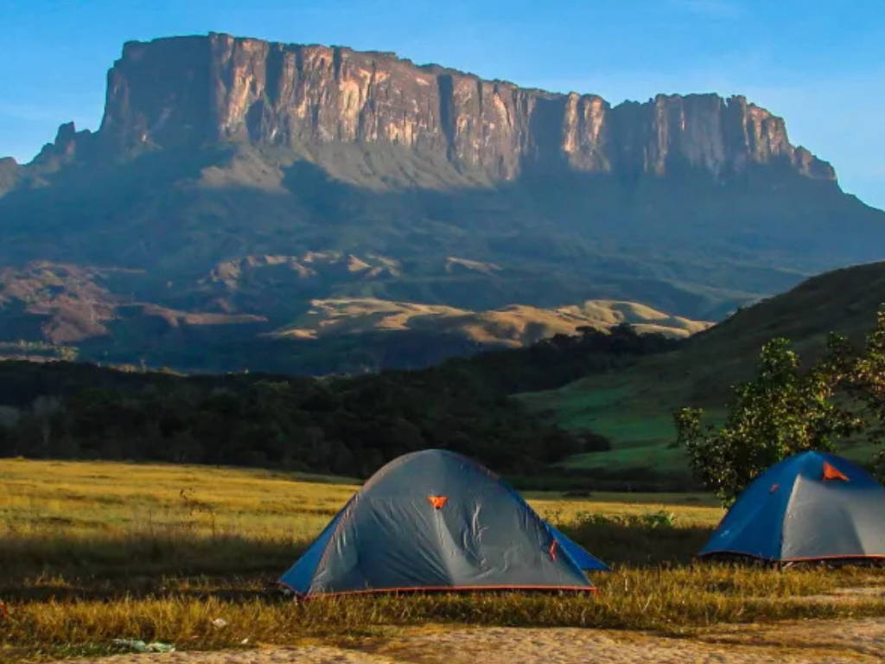

O Roraima é o estado mais ao norte do Brasil e faz fronteira com a Venezuela e a Guiana. Sua capital, Boa Vista, é a única capital brasileira totalmente localizada no hemisfério Norte. O estado possui belas paisagens naturais, com destaque para o Monte Roraima, uma das formações rochosas mais famosas da América do Sul. Grande parte do território é coberta pela vegetação amazônica e por áreas de savana conhecidas como lavrado. A economia de Roraima baseia-se na agropecuária, no comércio e no setor de serviços, além de possuir forte presença de comunidades indígenas que contribuem para a diversidade cultural da região.

Voltar